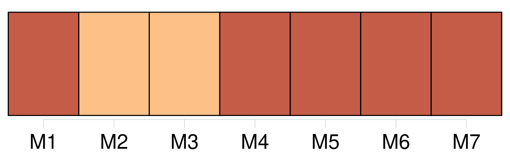
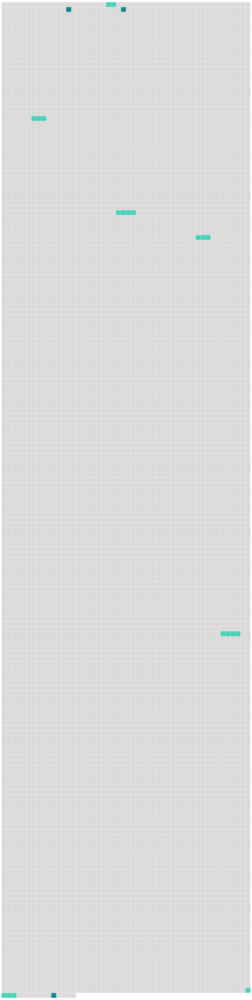

Longueur nb maillons : 9 mentions |
  |
Jamais mère ne fut plus tendre, plus vigilante, plus dévouée ; mais ce que Madame Seton voyait surtout dans [ses enfants] , c'était l'âme et ses destinées magnifiques ou terribles ; et la crainte de leur perte éternelle fut toujours son souci dominant, laissant bien loin toutes tes peines et toutes les joies d'une mère. En [les] berçant la nuit, elle récitait le Te Deum et [les] offrait à Dieu. [46 phrases]
» [49 phrases] Et maintenant je suis hors d'état, de rien vous dire, si ce n'est que vous preniez souvent entre vos bras [mes chers petits enfants] ; et encore, que vous ne laissiez jamais vos pensées s'arrêter sur quoi que ce soit venant de moi qui aurait pu vous faire de la peine. [12 phrases] Bénissez et embrassez pour moi [mes chers petits] [160 phrases] Nos chères sœurs … [mes chers petits enfants] …… [165 phrases] Souvent il parle de [ses chers petits enfants] ; plus souvent encore du bonheur de [les] revoir au ciel. |
 |
La ressource peut être téléchargée sur la page Ortolang
Si vous avez des questions ou vous voyez des erreurs, merci d'envoyer un mail à silvia.federzoni89@gmail.com
Site développé par S. Federzoni (contact)